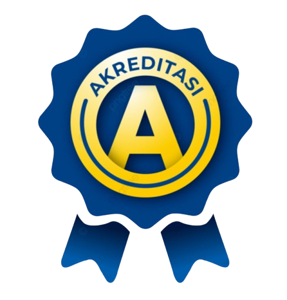

Terakreditasi A
Terakreditasi A (Sangat Baik) Oleh BAN-SM Tahun 2019
Sekolah Adiwiyata
Lingkungan Sekolah yang Asri dan Nyaman untuk Belajar
Terakreditasi A (Sangat Baik) Oleh BAN-SM Tahun 2019
Lingkungan Sekolah yang Asri dan Nyaman untuk Belajar

Assalamu'alaikum Warahmatullahi Wabarakatuh,
Salam Sejahtera untuk kita semua. Selamat datang di situs web resmi SDN Poris Pelawad 6. Kami berharap situs ini dapat menjadi jendela informasi sekaligus media komunikasi bagi siswa, orang tua, dan masyarakat.
Melalui situs ini, kami berkomitmen untuk terus memberikan informasi terkini terkait kegiatan sekolah, prestasi siswa, serta program-program pendidikan yang mendukung perkembangan potensi anak didik kami. Semoga keberadaan situs ini dapat mempererat kerja sama dan partisipasi aktif semua pihak dalam memajukan pendidikan di sekolah kita tercinta.
Terima kasih atas kunjungan Anda. Semoga SDN Poris Pelawad 6 semakin berprestasi dan berkontribusi dalam membentuk generasi penerus bangsa yang unggul dan berkarakter.
Wassalamu'alaikum Warahmatullahi Wabarakatuh.
Juhairiyah , S.pd, M.pd
Kepala Sekolah SDN Poris Pelawad 6
Baca tulis Al-Qur'an dengan guru berkualitas

Program Yang diadakan Pemerintah Untuk setiap sekolah

Rutinitas Tadarus bersama sekolah sdn poris pelawad 4&6